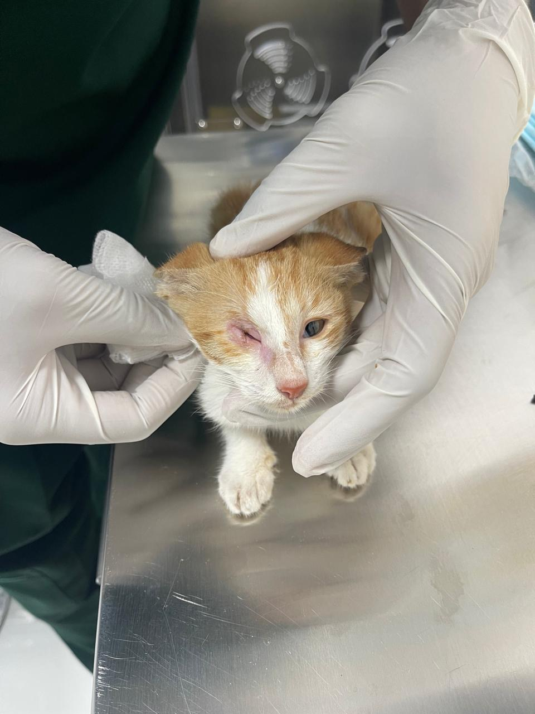
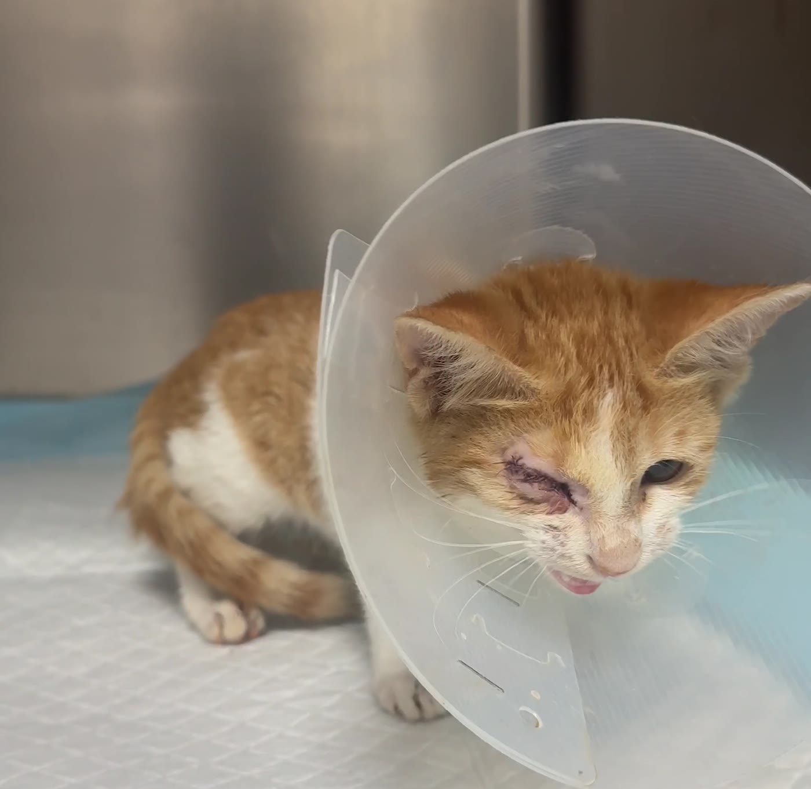
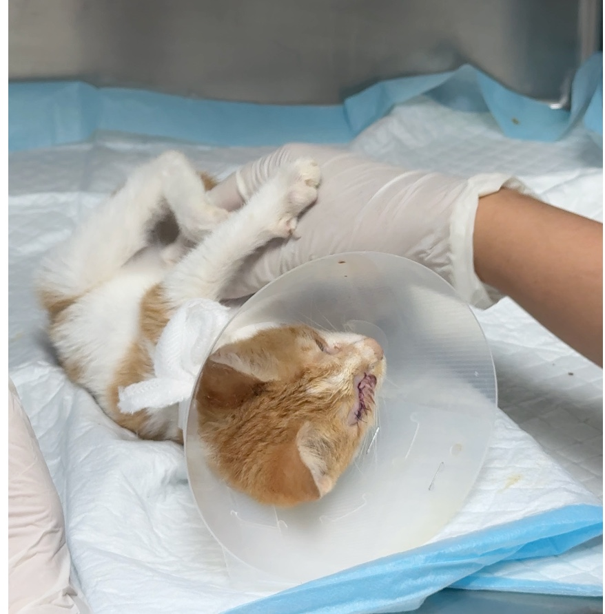
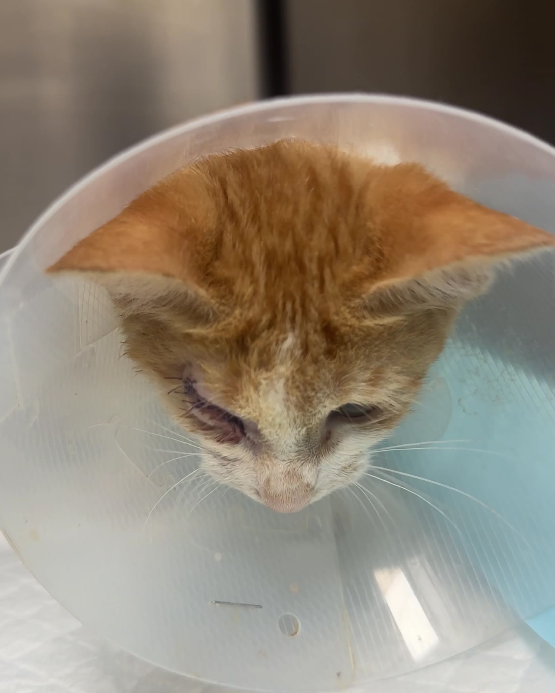

01
Rescue dayInfected eye, 400 g

Rescued · Recovering · Ready to love
Found alone on the street, the runt of her litter, with one eye badly infected. We trapped her and rushed her to the vet.
The eye had been lost in a fight, so she had surgery. She's healing fast and has nowhere to go. She doesn't belong on the street.
قطة صغيرة تبحث عن بيت محب
One-eyed cats live full, normal lives


